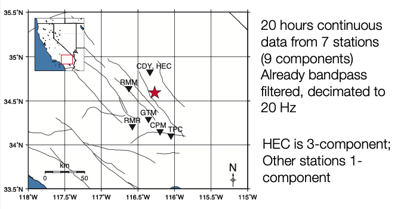
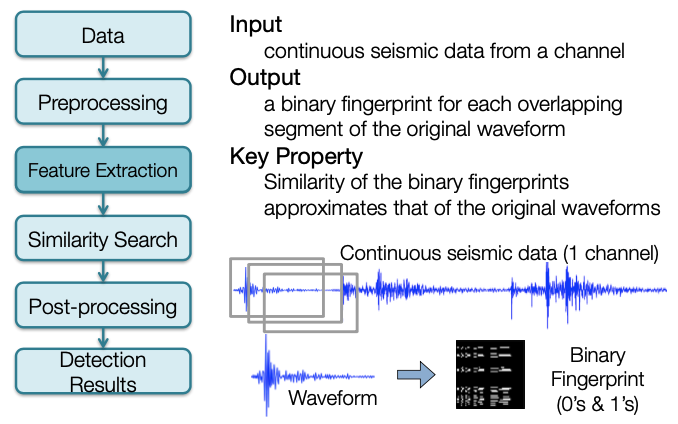
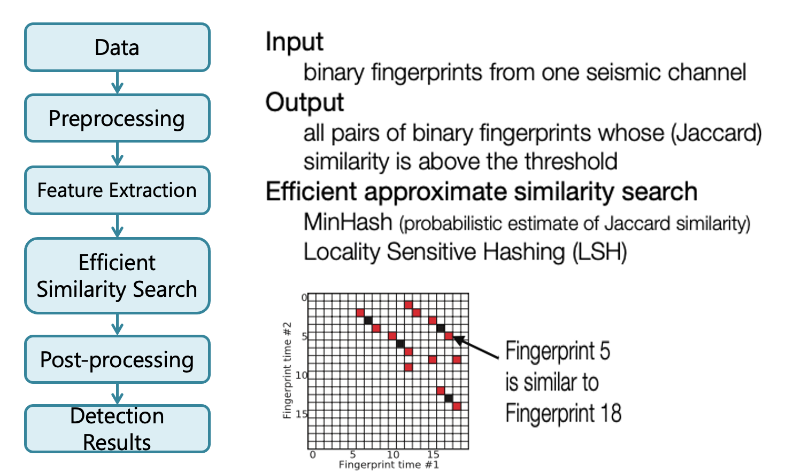
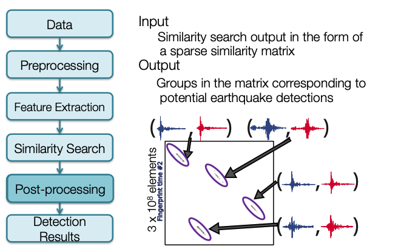
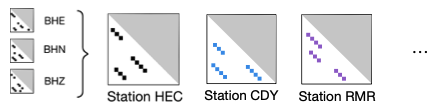
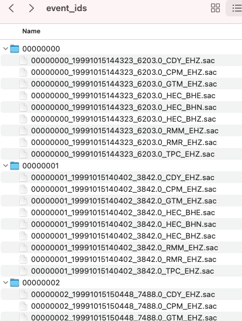
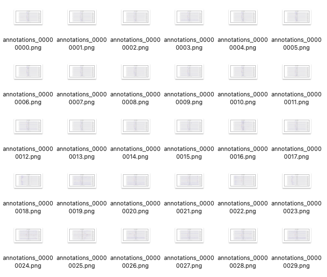
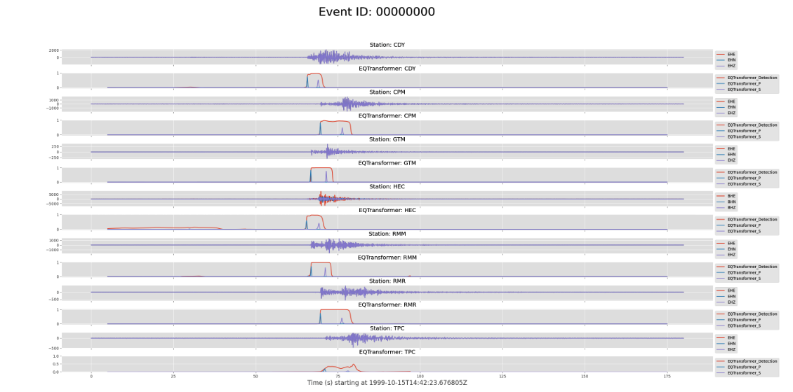
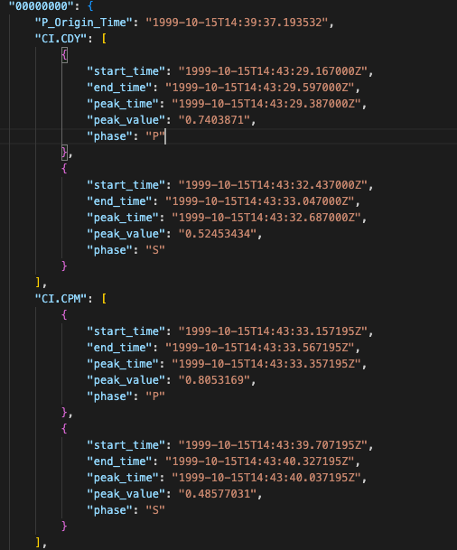
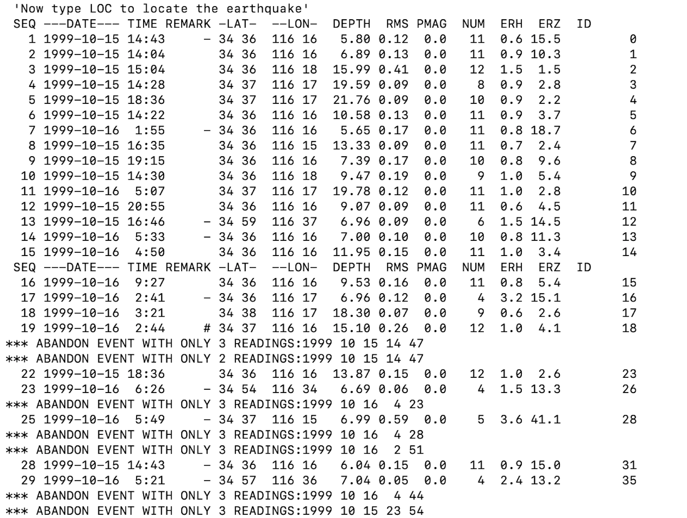

Tutorial¶
Example Data: Hector Mine Foreshocks¶

Decimated filtered waveform data (20 Hz sampling rate) to use for FAST: data/waveforms${STATION}/Deci5*
Original unfiltered waveform data (20 to 100 Hz sampling rate) to use for phase picking: data/waveforms${STATION}/19991015*
File Structure Overview¶
Code¶
fingerprint/ # Fingerprint
simsearch/ # Similarity Search
postprocessing/ # Postprocessing
utils/ # Utility Functions
preprocess/
network/
events/
run_fp.py
run_simsearch.py
Configuration and Parameters¶
parameters/
fingerprint/
simsearch/
postprocess/
Data¶
data/
waveforms${STATION}/
Deci5*${STATION}*.sac
19991015*${STATION}*.sac
Feature Extraction¶

Generate Fingerprints¶
- Create fingerprints for each of the 9 channels (7 stations) + global index, using wrapper
- Alternatively, to fingerprint a specific station, call the fingerprint script with the corresponding fingerprint parameter file:
~/quake_tutorial$ cd fingerprint/
~/quake_tutorial/fingerprint$ python gen_fp.py ../parameters/fingerprint/fp_input_CI_CDY_EHZ.json
Global Index¶
Note
Global index is already called by run_fp.py wrapper
- Complete this step only after you have finished computing fingerprints for every component and station you want to use for detection.
global_index.pyinfingerprint/global_indices.jsoninparameters/fingerprint/
- Continuous data start/end times may be different, and time gaps may happen at different times, at different components and stations.
- Global index: consistent way to refer to times of fingerprints at different components and stations.
Similarity Search¶

Search for Similar Earthquake Pairs¶
- Compile and build C++ similarity search code.
- Similarity search for each of the 9 channels (7 stations), using wrapper
- Alternatively, to use similarity search for a specific station, call the similarity search script with the corresponding similarity search parameter file:
~/quake_tutorial$ cd simsearch/
~/quake_tutorial$ cp ../parameters/simsearch/simsearch_input_HectorMine.sh .
~/quake_tutorial$ ./simsearch_input_HectorMine.sh
FAST Similarity Search Output (1 Channel)¶
data/waveforms${STATION}/fingerprints
— MinHash Signatures (can delete these later)
• mh_${STATION}_${CHANNEL}_${nhash}.bin
• Example: mh_CDY_EHZ_4.bin
— Binary files with similarity search output (npart files, one per partition, with first and last fingerprint index for the partition in filename):
• candidate_pairs_${STATION}_${CHANNEL}_${nhash},${ntbl}(${FIRST_FP_INDEX},${LAST_FP_INDEX})
• Example: andiate_pairs_CDY_EHZ_4,2(0,74793)
• For efficiency, the output is binary format; need parsing to convert similarity search output to text files
Parse FAST Similarity Search Output: [Binary --> Text File]¶
-
Use the wrapper script to parse all 9 channels (7 stations)
-
Parse a Specific Channel
-
Example input file:
candidate_pairs_CDY_EHZ_4,2(0,74793) - Example command:
Postprocessing¶

Postprocess: Combine FAST Similarity Search Output (3 Components @ 1 Station)¶
-
Combine similarity matrix from all components in each station, and copy outputs to
../data/inputs_network/using wrapper script:~/quake_tutorial/postprocessing$ cp ../parameters/postprocess/*.sh .~/quake_tutorial/postprocessing$ ./combine_HectorMine_pairs.sh
-
Alternatively, to combine outputs (add “FAST similarity” for same fingerprint pair (index1, index2) ) from a specific station:
$ python parse_results.py –d <folder_with_text_sim_search_files> -p <text_sim_search_file_prefix> --sort true –parse false –c true –t <threshold>-
Example:
$ python parse_results.py –d ../data/inputs_network/ -p candidate_pairs_HEC --sort true –parse false –c true –t 6- Adds FAST similarity for same fingerprint pairs on HEC components:
candidate_pairs_HEC_BHE_merged.txt,candidate_pairs_HEC_BHN_merged.txt,candidate_pairs_HEC_BHZ_merged.txt - Output (one file per station):
candidate_pairs_HEC_combined.txt
Warning
By default, the *merged.txt files for all 3 components are deleted after combining! Copy them before this step if you want to keep them.
- Adds FAST similarity for same fingerprint pairs on HEC components:
-
Usually set threshold=number of components * v, where v=nvote at a single component
- The threshold helps filter out matches generated from noise, since we require either strong matches at a single component, or weak matches at multiple components
- May want to set threshold slightly lower (e.g., 2*v) if the output size is too small after combining
Postprocess: Weight Stations Equally¶
-
‘Equalize’ across network: weighting stations with different number of components equally
- Hector Mine example: one 3-component station (HEC) with similarity threshold at 6 votes, and 6 1-component stations with similarity threshold at 2 votes.
- Want to weight each station equally, so multiply similarity in each 1-component station by 3
$ awk ‘{print$1,$2,3*$3}’ candidate_pairs_CDY_EHZ_merged.txt > candidate_pairs_CDY_combined.txt
-
Another option: use only part of the data (e.g. vertical component at each station)

Postprocess: Network Detection¶
- Run network detection (combine FAST results from all 7 stations):
~/quake_tutorial/postprocessing$ cp ../parameters/network/* .~/quake_tutorial/postprocessing$ python scr_run_network_det.py 7sta_2stathresh_network_params.json
Input file: 7sta_2stathresh_network_params.json
"io": {
"channel_vars": ["CDY", "CPM", "GTM", "HEC", "RMM", "RMR", "TPC"], # Station names
"fname_template": "candidate_pairs_%s_combined.txt", # Input file (to fill w/station name)
"base_dir": ”../data/", # Base directory
"data_folder": "inputs_network/", # Input file directory
"out_folder": "network_detection/" # Output file directory
}
Network Detection Outputs¶
- Network Detection Output (text file with labeled columns)
- Example (ranked in descending order of ‘peaksum’):
7sta_2stathresh_detlist_rank_by_peaksum.txt - First (num_sta=number of stations) columns: starting fingerprint index at each station (time information)
- Outputs “nan” if not observed at a particular station
dL: Maximum length (samples) along diagonal, over all event-pairs containing this eventnevents: Number of other events ‘linked’ to (similar to) this eventnsta: Number of stations over which other events are similar to this eventtot_ndets: Total number of fingerprint-pairs (pixels) containing this event, over all event-pair clusters, over all stationsmax_ndets: Maximum number of fingerprint-pairs (pixels) containing this event, over all event-pair clusters, over all stationstot_vol: Total sum (or ‘volume’) of all similarity values (added over all stations), over all event-pairs containing this eventmax_vol:Maximum sum (or ‘volume’) of all similarity values (added over all stations), over all event-pairs containing this eventmax_peaksum: Maximum similarity value (added over all stations), over all event-pairs containing this event
- Example (ranked in descending order of ‘peaksum’):
Example Custom Scripts to Clean up and Visualize Network Detection Results¶
- Depending on the parameters, network detection output text file might still have duplicate events
-
We provide some example post-processing scripts to remove these duplicate events and come up with a final list of event detections
cp ../utils/network/* .
Note
These have not been fully tested. You may want to write your own instead! Need to modify input/output parameters within each script. 4 scripts: outputs of each script are inputs to the next script.
-
~/quake_tutorial/postprocessing$ python arrange_network_detection_results.py- Save only start and end fingerprint indices for each event (Firstnum_stacolumns --> 2 columns)
- Output 2 more columns at end
Num_sta: number of stations that detected eventDiff_ind: Difference between first and last fingerprint index
- Example output:
NetworkDetectionTimes_7sta_2stathresh_detlist_rank_by_peaksum.txt
-
~/quake_tutorial/postprocessing$ ./remove_duplicates_after_network.sh- Remove events with duplicate start fingerprint index (keep events with highest num_sta then peaksum)
- Example output:
uniquestart_sorted_no_duplicates.txt
-
~/quake_tutorial/postprocessing$ python delete_overlap_network_detections.py- Remove events with overlapping times: where start time of one event is before end time of another event
- Example output:
7sta_2stathresh_FinalUniqueNetworkDetectionTimes.txt
-
~/quake_tutorial/postprocessing$ ./final_network_sort_nsta_peaksum.sh- Sort events in descending order of num_sta (number of stations that detected event), then peaksum (maximum similarity for this event)
- Should no longer have duplicate events
- Example output:
sort_nsta_peaksum_7sta_2stathresh_FinalUniqueNetworkDetectionTimes.txt
Final Thresholds: Visual/Manual Inspection¶
Now we have a list of detections — but are they actually earthquakes? We need to plot and visually inspect them.
Example script, view first 100 events:
- Input finger indices from
sort_nsta_peaksum_7sta_2stathresh_FinalUniqueNetworkDetectionTimes.txt - Need global start time (t0) from global_idx_stats.txt, dt_fp in seconds
- Here t0 = UTCDateTime('1999-10-15T13:00:00.676000')
- Event time = t0 + dt_fp * (start finger print index)
- Cut short time window around event waveform in filtered data, plot across all stations, save image to png file with names ordered in descending order of num_sta, peaksum – does it look like an earthquake?
Set final thresholds for num_sta, peaksum
- Example Output (first 50 events):
Additional post-processing scripts to remove false positive detections?
Final Event Detection List¶
Example Script:
Example Input:
Example Output:
- Column 1: Event ID
- Column 2: YYYY-MM-DDTHH:MM:SS.SSSS for event detection time. This is an approximate arrival time for the event (NOT origin time)
- Column 3: Event detection time (seconds) since the start time for the first fingerprint, which for this data set is UTCDateTime('1999-10-15T13:00:00.676000')
- Column 4: First fingerprint index (integer) for this event. Multiply by dt_fp = 1 second to get the time in column 2. Columns 1, 2, 3 basically represent the same information.
- Column 5: Last fingerprint index (integer) for this event from the network-detection
- Column 6: Fingerprint index duration; column5 = column4-column3. Some sense of event duration
- Column 7: Number of stations at which the event was similar enough for a detection, the higher the better (nsta_thresh = 2)
- Column 8: Peak sum of similarity for this event over all stations where it was detected, the higher the better (more similar to some other event).
- Detection list is ordered in descending order of number of stations (Column 6), then in descending order of peaksum similarity (Column 7).
Further processing is required for P/S phase picking and location:
- Cut SAC files
- Pick phases (automatic or manual)
- Locate earthquakes
- Compute magnitudes
Info
- The following tutorials are not a part of FAST, but are optional next steps to take for phase picking with SeisBench, earthquake location with HYPOINVERSE, and mapping/visualization with PyGMT.
- The same commands below should run within the Docker container, but replace the path
~/FAST/withroot@555d364b63d7:/app/FAST/
Phase Picking¶
Cut SAC Files¶
- Cut short event waveform files in SAC format from the continuous seismic data at all stations, based on the detection results from FAST.
- Cut from the original unfiltered continuous seismic data at full sampling rate (usually 100 sps), not the decimated filtered continuous seismic data used to run FAST.
- In this example, the event waveform time windows are 180 seconds long, 60 seconds before detection time, 120 seconds after detection time.
- Check for cut files in:
- Example:

Install SeisBench¶
Pick Phases (automatically)¶
- Run SeisBench script for all events and all stations. This can take a few minutes to finish running.
- Annotated plots are found in:

- Example annotated plot from event 00000000:

Output saved in:
Example output:

- "peak_time": Arrival time of pick
- "peak_value": Probability of pick
Earthquake Location¶
The output from run_seisbench.py in the event_picks.json file contains the information needed to locate the detected earthquakes from the FAST final detection list. We use HYPOINVERSE to locate earthquakes from the picks found with run_seisbench.py.
HYPOINVERSE is the standard location program supplied with the Earthworm seismic acquisition and processing system (AQMS). Read more about it here.
Formatting input data for HYPOINVERSE¶
To begin earthquake location run the following to format the phase picks for HYPOINVERSE:
(eq_fast) ~/FAST/utils/picking$ cd ../location/
(eq_fast) ~/FAST/utils/location$ python SeisBench2hypoinverse.py
Output:
The script SeisBench2hypoinverse.py will also copy the following files from ~/FAST/utils/location/ to the directory ~/FAST/data/location_hypoinverse/ where we will run HYPOINVERSE:
Get Hector Mine Station List as a json file:
(eq_fast) ~/FAST/utils/location$ cd ../preprocess/
(eq_fast) ~/FAST/utils/preprocess$ python get_station_list.py
Output:
Convert station_list.json to HYPOINVERSE station input format in station_list.sta:
(eq_fast) ~/FAST/utils/preprocess$ cd ../location/
(eq_fast) ~/FAST/utils/location$ python output_station_file.py
Output:
Install and Run HYPOINVERSE¶
Check that GFortran is installed, since it is required to compile the HYPOINVERSE program from source:
Example expected output:
GNU Fortran (Ubuntu 7.5.0-3ubuntu1~18.04) 7.5.0
If GFortran is not installed, run:
Download HYPOINVERSE here, expand the hyp1.40.tar file,
move the resulting hyp1.40/ directory to ~/FAST/utils/location/hyp1.40/. This can be done with the following commands:
(eq_fast) ~/FAST/utils/location$ wget -c https://escweb.wr.usgs.gov/content/software/HYPOINVERSE/hyp1.40.tar
(eq_fast) ~/FAST/utils/location$ mkdir hyp1.40
(eq_fast) ~/FAST/utils/location$ cd hyp1.40
(eq_fast) ~/FAST/utils/location/hyp1.40$ tar -xvf ../hyp1.40.tar
(eq_fast) ~/FAST/utils/location/hyp1.40$ ls -l
drwxr-xr-x 4 10003 124 128 Sep 10 2014 doc
-rw-r--r-- 1 root root 77392 Sep 10 2014 hyp1.40-release-notes.pdf
-rw-r--r-- 1 root root 3258 Sep 10 2014 hyp1.40-release-notes.txt
drwxr-xr-x 54 10003 124 1728 Sep 10 2014 source
drwxr-xr-x 13 10003 124 416 Aug 26 2014 testone
Before compiling HYPOINVERSE, we need to make changes to makefile in ~/FAST/utils/location/hyp1.40/source/:
(eq_fast) ~/FAST/utils/location/hyp1.40$ cd source
(eq_fast) ~/FAST/utils/location/hyp1.40/source$ sed -i '/calnet/d' makefile
(eq_fast) ~/FAST/utils/location/hyp1.40/source$ sed -i 's/g77/gfortran/g' makefile
- Remove lines 16 and 230
- Find and replace:
g77withgfortran
Check that HYPOINVERSE runs:
-
Compile HYPOINVERSE:
-
Make it executable:
-
Run HYPOINVERSE:
-
Expected output:
If you have this output, HYPOINVERSE is running correctly. Press ctrl-c to exit.
Run HYPOINVERSE¶
Run HYPOINVERSE within the directory ~/FAST/data/location_hypoinverse/:
(eq_fast) ~/FAST/utils/location$ cd ../../data/location_hypoinverse/
(eq_fast) ~/FAST/data/location_hypoinverse$ ../../utils/location/hyp1.40/source/hyp1.40
Use @locate_events.hyp as input:
Expected output: 
You should see output files called locate_events.sum and locate_events.arc in HYPOINVERSE Y2000 summary format, but these are difficult to read.
Note
locate_events.arc has the event info, and phase pick info for each event. locate_events.sum has only the event info, no phase pick info.
Use output_hypoinverse_as_text.py to output locate_events.sum in a more readable format to use for plotting and visualization.
(eq_fast) ~/FAST/data/location_hypoinverse$ cd ../../utils/location/
(eq_fast) ~/FAST/utils/location$ python output_hypoinverse_as_text.py
Plotting Earthquake Locations with PyGMT¶
Install PyGMT¶
IMPORTANT - PyGMT needs to be installed and run in a separate pygmt conda environment, since it is incompatible with the eq_fast conda environment.
First, exit the eq_fast conda environment
Next, create the pygmt conda environment with its dependencies, as described in the PyGMT install page
(base) ~/FAST/utils/location$ conda config --prepend channels conda-forge
(base) ~/FAST/utils/location$ conda create --name pygmt python=3.9 numpy pandas xarray netcdf4 packaging gmt
Finally, enter the pygmt conda environment and install PyGMT
(base) ~/FAST/utils/location$ conda activate pygmt
(pygmt) ~/FAST/utils/location$ conda install pygmt
Create a PyGMT map of earthquake locations and seismic stations¶
(pygmt) ~/FAST/utils/location$ cd ../mapping/
(pygmt) ~/FAST/utils/mapping$ python hypoinverse_to_pygmt.py
Figure saved as pygmt_hectormine_map.png in ~/FAST/data/mapping_pygmt/
Map Output: